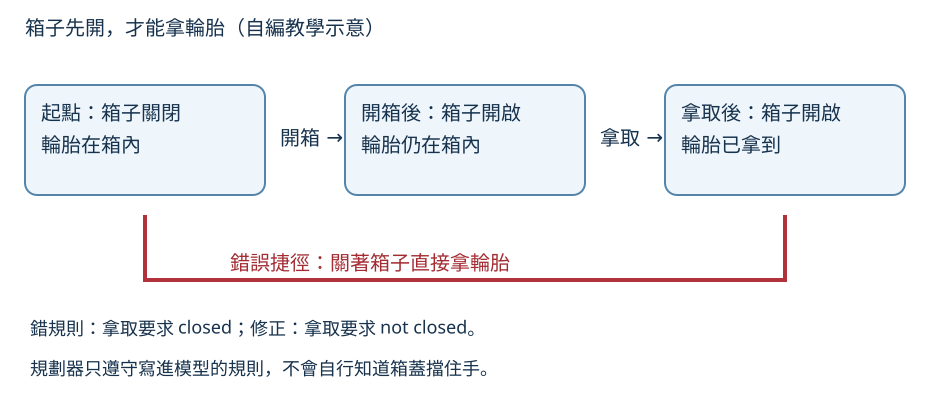
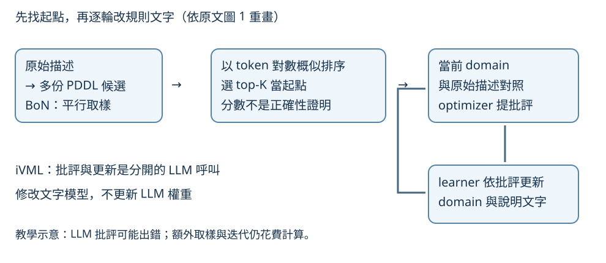

想像你給機器人一本遊戲規則：箱子開了才能拿輪胎。若它把規則抄成「關著才能拿」，再厲害的找路工具也會照錯規則走。這篇研究讓語言模型先寫出明確規則，再花額外推論時間批評、修改，最後交給規劃器找步驟。
先走一遍箱子與輪胎
這是自編教學例子，簡化自原文 TyreWorld 拿取動作的前提錯誤，不是作者新增實驗。起點是箱子關閉、輪胎在箱內，目標是拿到輪胎。
正確步驟是先開箱，再拿輪胎。開箱改變箱蓋狀態；拿取要求箱子開著、輪胎仍在裡面，效果是輪胎離開箱子、由代理拿著。
若初稿誤寫成「箱子關著才能拿」，搜尋器可能直接拿取就報告達成目標。它在錯模型裡沒有違規，問題是模型沒有忠於描述。先修前提，再重新規劃，才能排除這條錯誤捷徑。
箱子開了，才能拿輪胎

放大閱讀圖解 ↗ · 窄螢幕可在圖內左右滑動。

圖解文字說明
- 起始狀態
箱子關閉，輪胎在箱內。
- 正確路徑
先開箱讓箱子變開啟，再拿取讓輪胎離開箱內並由代理持有。
- 紅色錯誤捷徑
錯模型把拿取前提寫為 closed，可能允許關箱直接拿取；修正為 not closed 後重新規劃。
- 示意邊界
這是簡化教學例子，沒有重現原文完整 PDDL 或實驗軌跡。
PDDL 是給規劃器讀的規則簿
PDDL 是規劃領域描述語言，把條件與動作寫成明確文字。謂詞是可判真假的狀態，例如箱子是否關閉；前置條件是動作開始前必須成立的事；效果是做完後哪些狀態改變。
domain 是可重用的動作規則，problem 則指定這次有哪些物件、起始狀態和目標。本文箱子例子把兩者分開：拿取規則屬於 domain，這顆輪胎在這個箱子裡是當次 problem。
為什麼要分開？因為語言模型負責把描述轉成規則，而經典規劃器能在明確狀態轉移上搜尋；規劃器找到的解永遠是相對於交給它的模型。
先廣找，再精修
BoN 是 Best-of-N：平行生成多份候選，依生成 token 的對數概似總和排序，留下分數較高的候選作起點。token 是模型處理的文字單位；對數概似表示模型給這串文字多高機率，不表示它符合真實規則。
iVML 是對單一實例的文字精修：optimizer 對照原始描述與當前規則，提出批評；learner 依回饋更新 domain 和說明文字。這兩步是分開的語言模型呼叫。
在箱子例子中，批評可以指出「closed 與先開箱的描述矛盾」，再把拿取前提改成 not closed。這是改文字世界模型，沒有更新語言模型權重；批評者仍可能看漏或提出錯修正。
BoN 起點與 iVML 精修

放大閱讀圖解 ↗ · 窄螢幕可在圖內左右滑動。

圖解文字說明
- BoN 初始化
平行生成 N 份候選，以生成 token 對數概似總和排序，選 top-K；分數不是正確性證明。
- iVML 批評
optimizer 對照原始描述、當前 domain 與說明文字，產生批評。
- iVML 更新
learner 依批評更新 domain 與說明，再進下一輪；修改文字模型，不改 LLM 權重。
- 成本與風險
額外呼叫需要計算，批評可能出錯，效果受初始候選品質限制。
兩道關卡，要各自檢查
第一道問題是：語法是否成立，計畫能否依模型中的前提與效果執行？第二道問題是：模型本身有沒有忠於原始描述？兩者不能互相取代。
假設錯模型的型別和語法都一致，且把拿取前提寫成關箱。那麼「直接拿取」可能通過模型內檢查，卻明顯不符合「先開箱」的描述。
論文 §5 明確承認，VAL 可檢查語法與計畫可執行性，不能判定規則是否符合領域意圖或常識。LLM 的批評是改稿訊號，也不是可靠的真值裁判。這個差距必須顯示，不能用「通過驗證」概括為完全正確。
形式與語意的兩道關卡
放大閱讀圖解 ↗ · 窄螢幕可在圖內左右滑動。

圖解文字說明
- 關卡 A
檢查語法、型別與模型內計畫可執行性。錯前提若語法一致，仍可能接受直接拿取。
- 關卡 B
對照原始描述：先開箱才能拿輪胎。因此關箱拿取不忠於描述。
- 兩者獨立
VAL 不驗領域意圖語意；通過形式檢查不等於規則正確。
- 批評也要查核
LLM 對照描述有助改稿，但不是可靠真值裁判。
自己查一次錯規則
可以自己做一個兩步檢查。先遮住修正答案，只給「輪胎在箱內、箱子關著」與錯誤拿取規則，問搜尋器會做什麼。它可能直接拿取；這是在檢查模型如何限制動作，不是在測常識。再把前提改為開啟，重新從同一起點搜尋，就必須先找一個能開箱的動作。
為什麼修規則後要重跑，而不能只把舊計畫多插一步？因為前提改變會影響整條狀態序列；有些先前可用的動作會消失，有些新的順序才可行。本文例子很短，插入開箱剛好可行，複雜任務仍應依更新後的模型重新檢查。
這也是符號表示的實用價值：錯誤可以定位到哪個前提或效果，而不只說整段回答看起來不合理。不過，描述若本來有歧義、漏掉關鍵限制，忠實翻譯仍可能不夠；本篇方法沒有把不完整描述自動變成現實世界的完整規則。以上是本文教學分析。
原文演算法與計算代價
§3.2 式 (3.1) 把各 token 的 log probability 相加作候選分數，再選 top-K。此排序不是獨立語意驗證，且分數受生成文字影響；高機率的錯規則仍可能勝出。
§3.3 式 (3.3)、(3.4) 讓批評函式和更新函式交替。文字回饋被比喻為 verbalized gradient，但不是對 LLM 權重計算數值梯度。
§4.3 圖 3 的 Qwen2.5-Coder-7B 實驗中，BoN 在取樣預算增加後出現飽和及退步趨勢。這是該實驗觀察，不能推成每次多抽一定更差，或 iVML 必然一直改善。
不微調省下的是額外權重訓練，不是零計算。候選生成、批評、更新、搜尋都需時間；好壞起點與批評品質也會限制收益。
數字該怎麼讀？
§4.2 表 2，Qwen2.5-Coder-7B 搭 iVML-5-BoN-8，作者報告 NL2Domain 成功率 85.2%、Prob2Domain 71.4%；兩者輸入分別是自然語言描述與 PDDL problem。這是該基線、預算與驗證方式下的結果。
§4.6 把生成模型交給 Fast Downward 規劃，比較直接讓 LLM 規劃。此設計支持把規則建模與搜尋拆開，但不能保證生成 domain 符合未檢驗的真實意圖。
表 3 的 TyreWorld 不只前提出錯，也展示效果寫法問題；本文箱子示例刻意只保留前提顛倒，並明示為簡化，不把它冒充原文完整 PDDL 或執行軌跡。
這還不是現實機器人的保證
論文評測假設狀態完全可觀測，沒有感測雜訊或遮擋，動作也精確執行。現實機器人可能看錯箱蓋、抓取滑落，或碰到規則未描述的物件。
因此，這裡的世界模型是可供搜尋的符號狀態轉移規則，不是已驗證能掌握現實所有變化的模擬器。形式清楚有助於定位錯誤，卻沒有替代對規則、感知與執行的驗證。
帶著問題回原文
先看圖 1，再讀 §3.1 的 PDDL 表示；接著讀 §3.2 的候選分數與 §3.3 的兩個提示模板，確認誰在改什麼。
再看 §4.3 表 3 的 TyreWorld，把自然語言、錯前提、修正前提逐一對照；讀圖 3 檢查加算力是否飽和。最後讀 §5 的語意驗證與模擬假設限制。
本庫提供摘要與精要逐節翻譯。本文以官方 arXiv:2502.04728v1 核對方法與定位，庫內筆記作閱讀輔助。
原文與來源
此頁依下列固定快照編寫；教學例子與程式片段用來解釋方法，請回到原文確認研究設定與結果。
- arXiv 原始論文 2502.04728 ↗（公開）
- 原庫專屬導讀／閱讀筆記 ↗（私有庫，需要 GitHub 存取權；快照 7660363）
- 官方原論文 v1 全文 ↗
- §3.2 BoN 對數概似排序 ↗
- §3.3 iVML 批評與更新 ↗
- §4.3 飽和現象與表 3 ↗
- §5 語意驗證及模擬限制 ↗
- 本庫摘要 ↗
- 本庫精要逐節翻譯 ↗